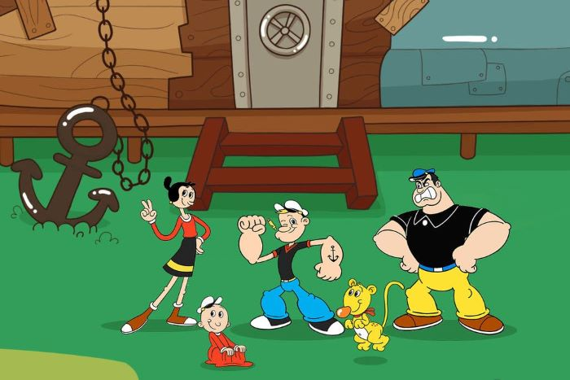

About Popeye
Popeye is one of the best cartoon character from the 20th Century. Probably the eariest vegan superhero and health influencer of all time.
Popyeye and his friends
Popeye's Characteristics
- He's got big muscles
- He's strong
- He loves spinach
Popeye's Friends
Popeye has a girlfriend named Olive Oyl, she's funny looking. He also has an emeny name Bluto. He's a big jerk. Click on links below to read more about them: